从高考后方案到香港本科衔接
高考后路径不理想时，副学士不是“退而求其次”，而是需要被长期管理的本科衔接方案。
- 重点动作
- 副学士项目筛选、入学衔接、选课建议、GPA 目标和本科转入材料节奏。
- 展示边界
- 公开案例只展示匿名结果；能否转入理想本科取决于学生表现与当年政策。
Success Cases & Offer Library
把真实申请结果整理成可公开展示的案例资产：保留院校、项目、层级和申请方向，隐藏学生姓名、申请编号、生日、邮箱、地址、学生 ID 与二维码等个人信息。
以下案例仅作过往服务与申请路径展示，个案结果受学生背景、申请年份、材料质量和院校政策影响，不构成录取承诺。Case Stories
家长真正需要判断的是：学生起点是什么，Rain 做了哪些服务动作，结果展示有什么边界。
高考后路径不理想时，副学士不是“退而求其次”，而是需要被长期管理的本科衔接方案。
研究生申请常见问题不是素材太少，而是素材之间缺少清晰关系。
单纯“包装文书”无法解决成绩短板，必须把课程表现、背景补强和备选路径一起看。
Undergraduate & Postgraduate
帮助家长快速判断 Rain Education 覆盖的地区、项目层级与申请方向，理解不同学生起点对应的规划重点。
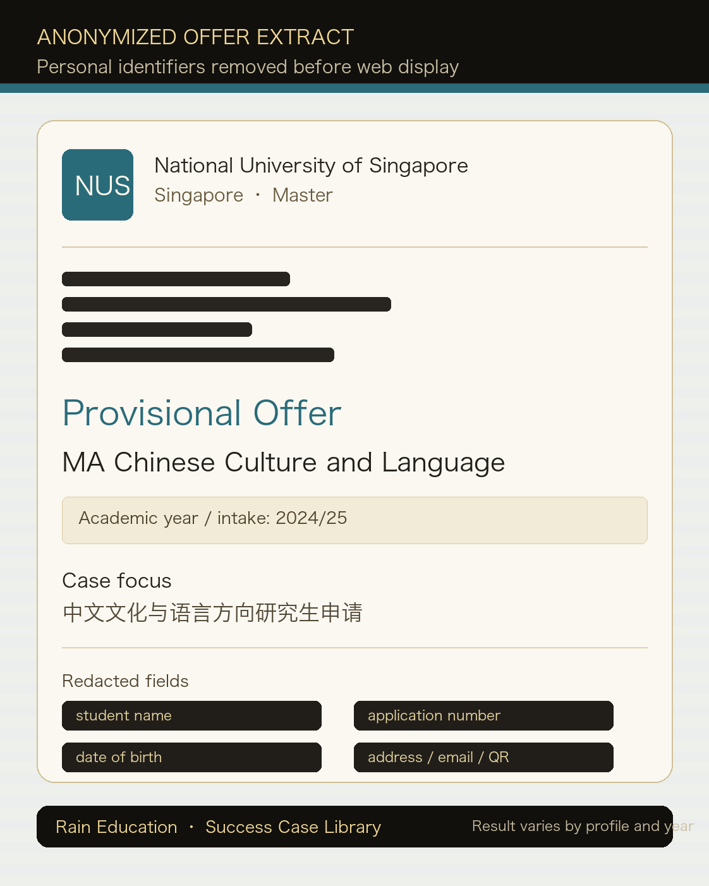
新加坡国立大学中文文化与语言方向研究生 provisional offer，展示亚洲顶尖院校文社科申请成果。
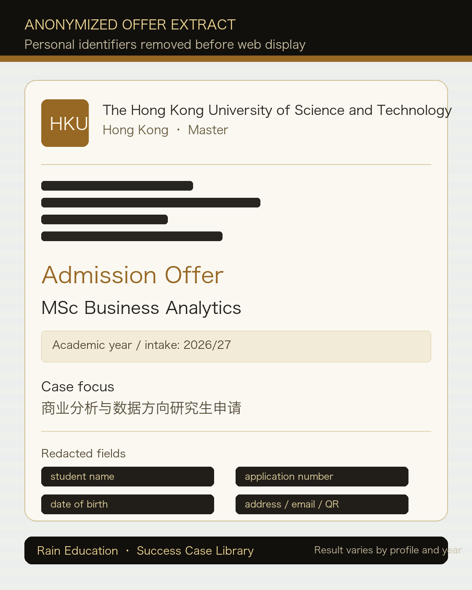
香港科技大学商业分析硕士录取，体现商科、数据分析和港校研究生申请方向的案例储备。
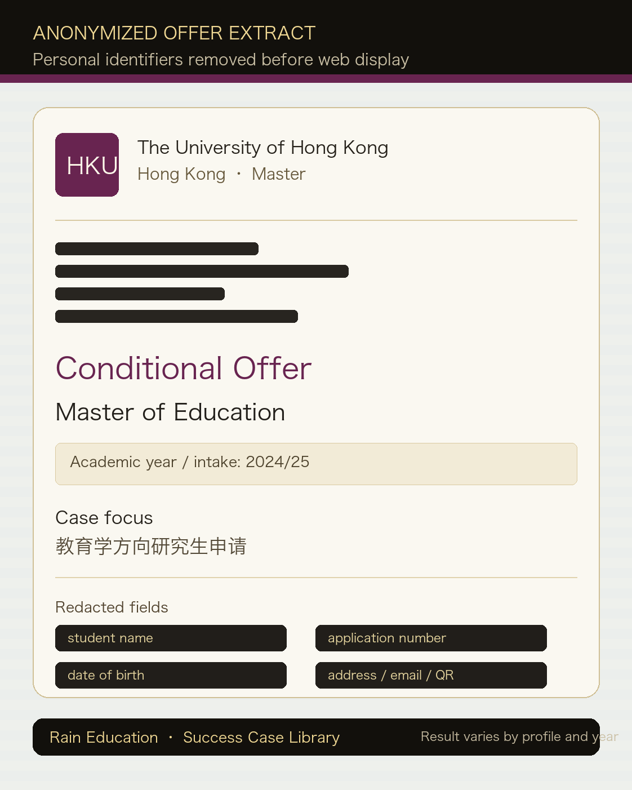
香港大学教育学硕士 conditional offer，适合呈现教育、语言、教学与研究兴趣整合型申请。
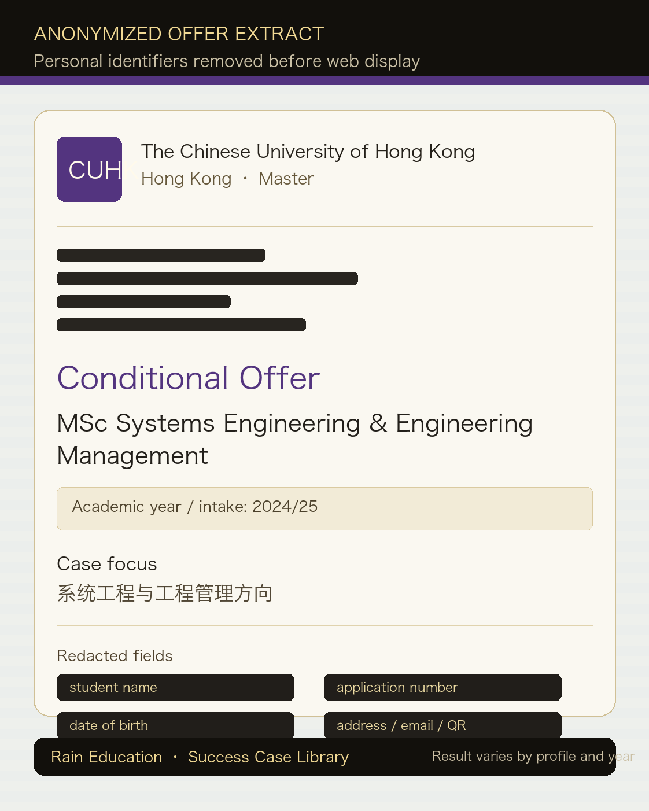
香港中文大学工程学院硕士 conditional offer，展示工程管理、系统工程和跨学科申请路径。
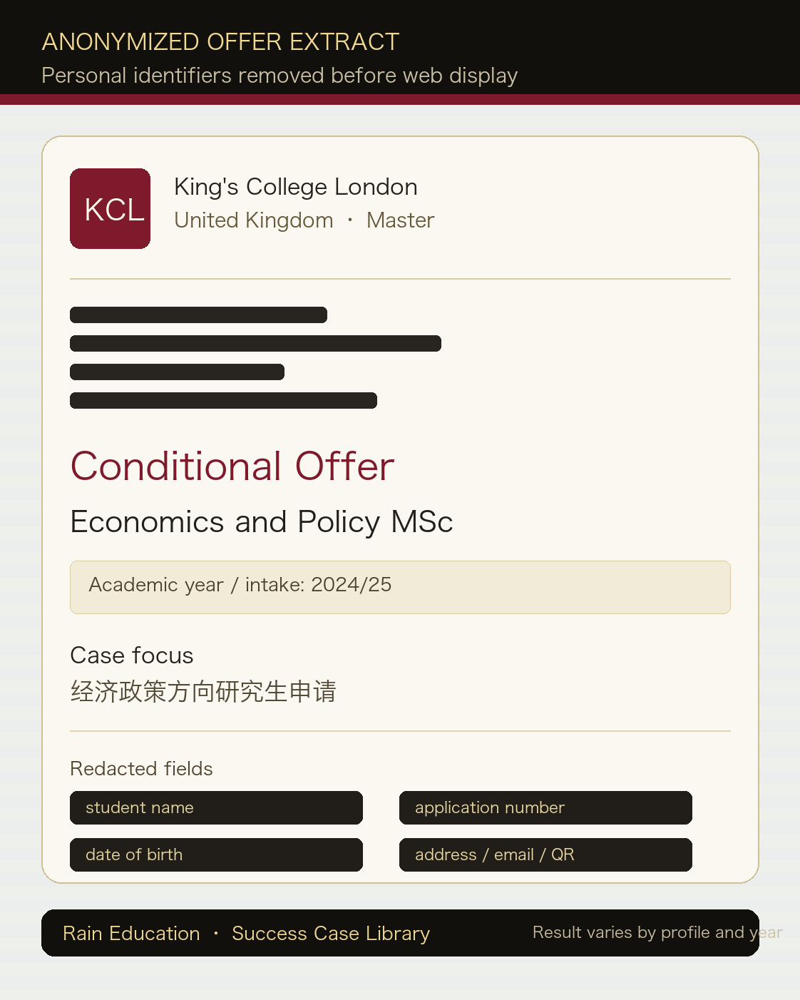
伦敦国王学院经济与政策硕士 conditional offer，展示英国高竞争研究生方向的材料与背景策略。
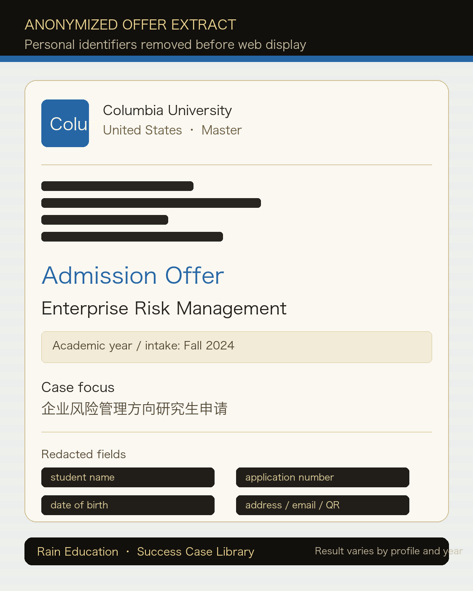
哥伦比亚大学企业风险管理方向录取，适合展示美国名校职业导向型研究生申请案例。
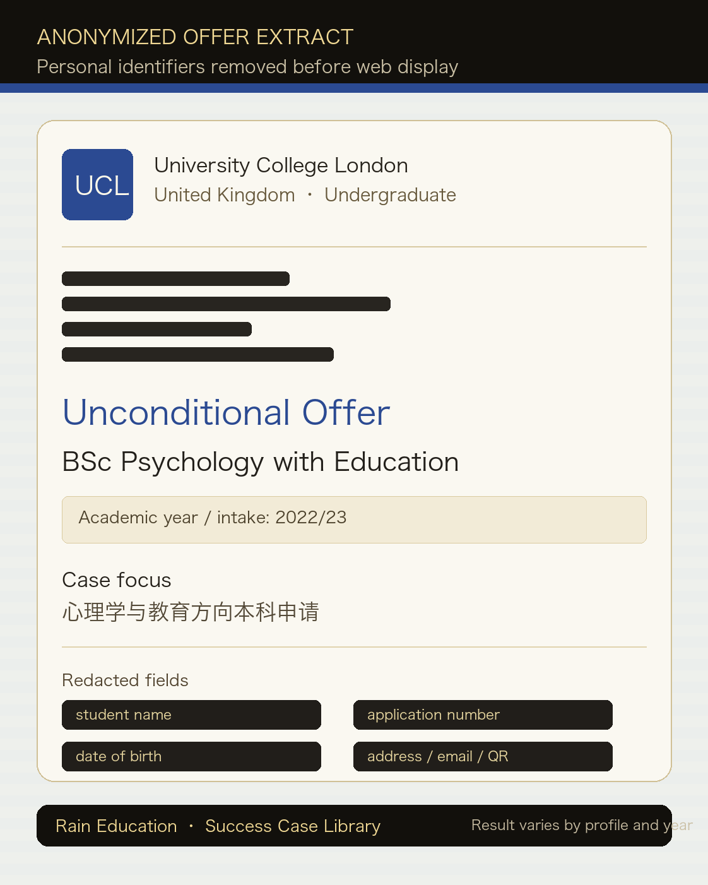
伦敦大学学院心理学与教育本科 unconditional offer，展示英国本科高竞争专业申请结果。
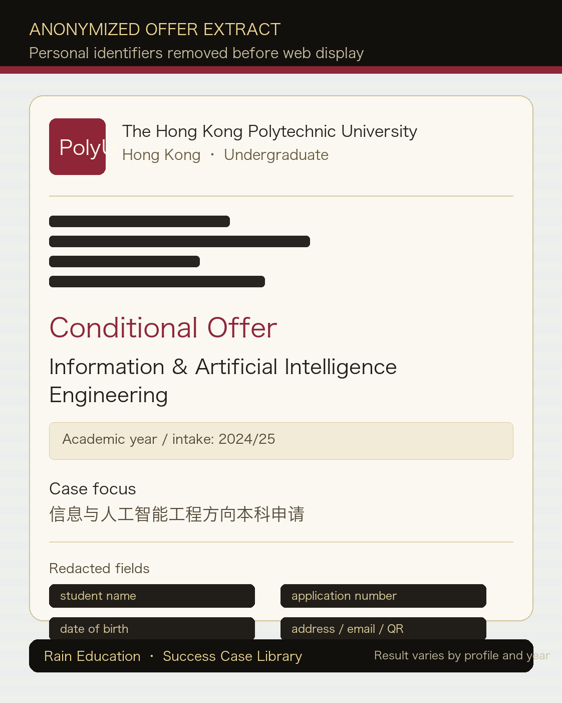
香港理工大学信息与人工智能工程本科 conditional offer，展示工程、AI 与香港本科直申方向。
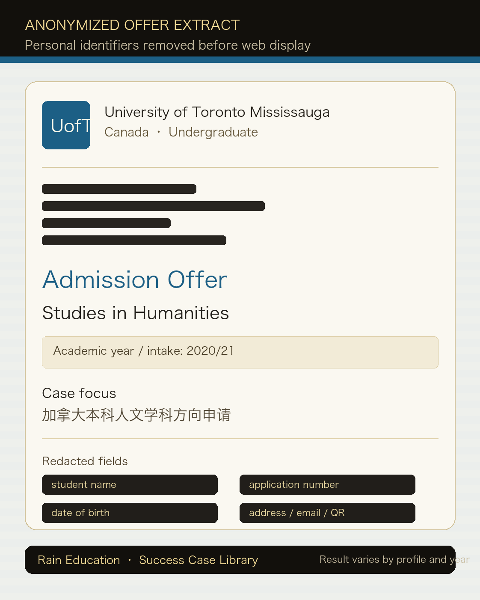
多伦多大学密西沙加校区人文学科本科录取，补足加拿大方向本科申请成果展示。
Associate Transfer Offers
集中展示 AD / HD 学生通过 GPA、专业匹配和材料准备衔接香港本科、Year 3 或 Advanced Standing 的结果。
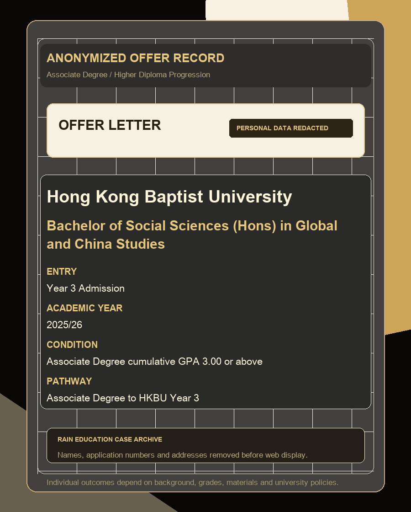
HKBU · Global and China StudiesYear 3 conditional offer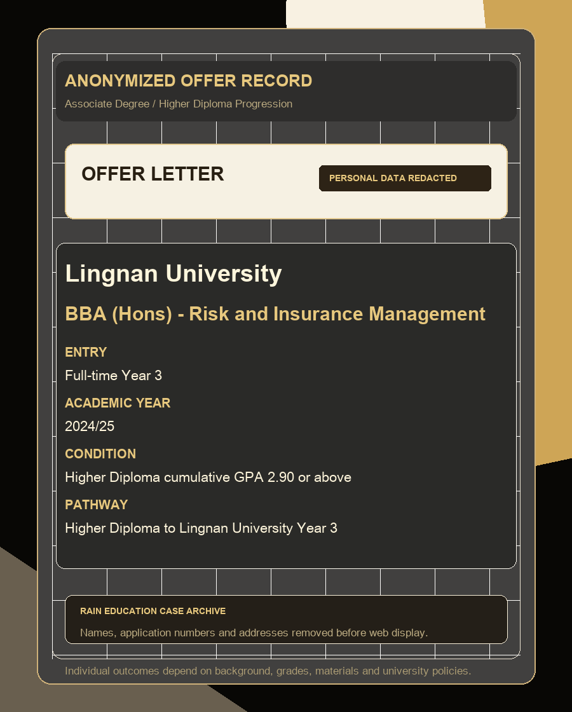
Lingnan · BBA Risk and Insurance ManagementFull-time Year 3 offer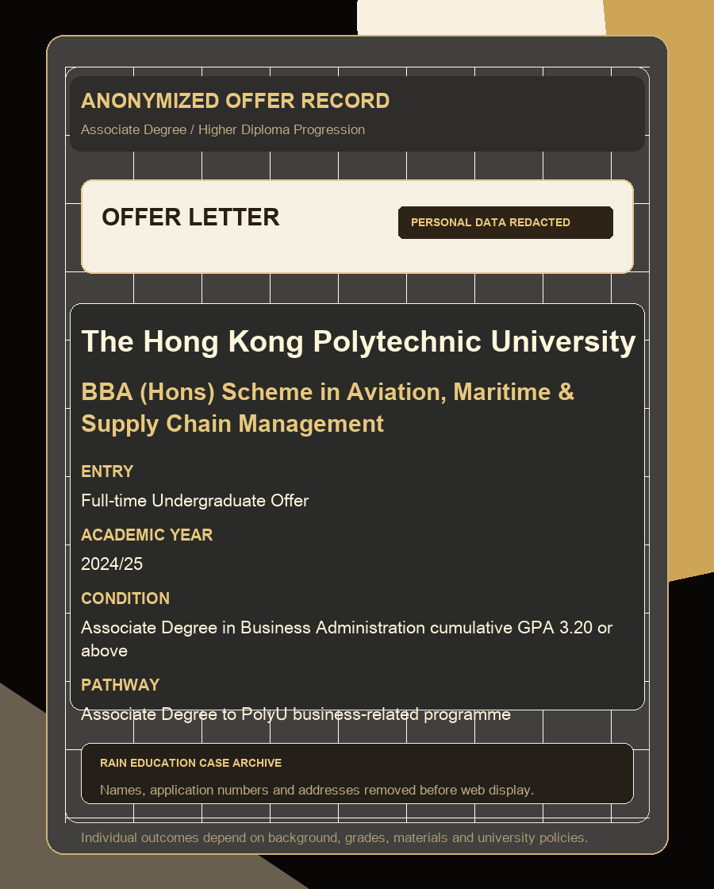
PolyU · Aviation, Maritime & Supply ChainUndergraduate conditional offer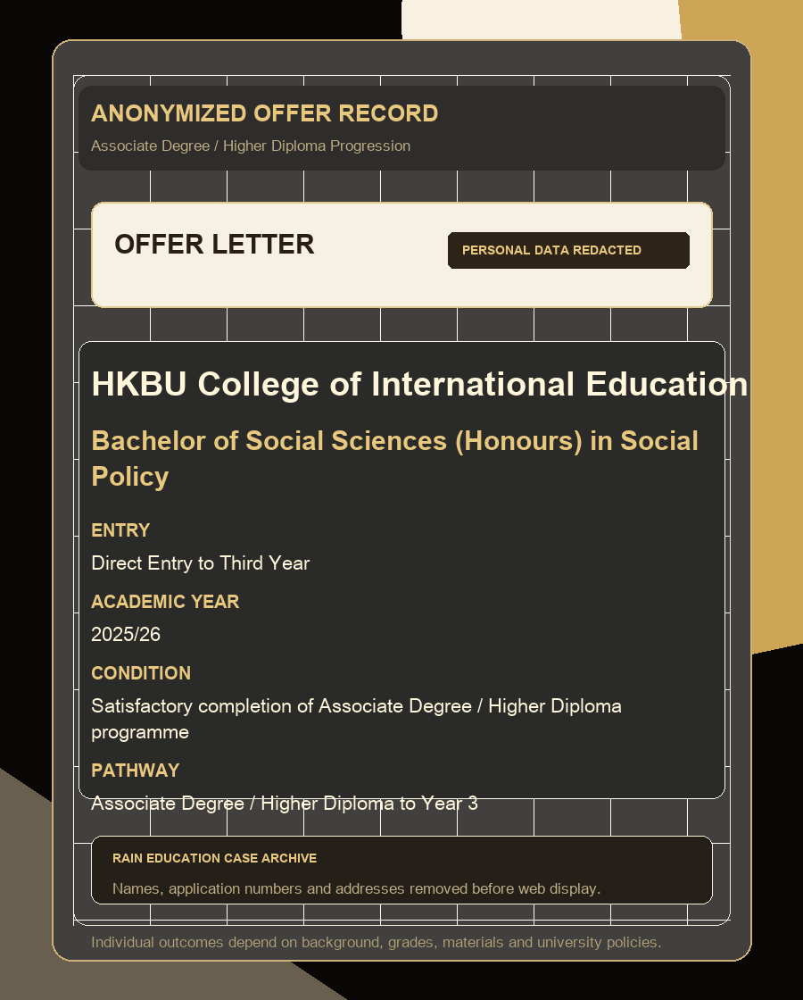
HKBU CIE · Social PolicyDirect Entry to Third YearHow Cases Are Organized
成熟官网更重要的是让家长看懂“学生背景、申请难点、服务动作和结果展示”的关系。
本科、研究生、副学士升本科、研究型项目分别展示，避免不同路径混在一起。
香港、英国、新加坡、美国、澳洲、加拿大分区呈现，便于家庭判断适配方向。
院校定位、GPA 管理、文书策略、面试辅导、背景提升和 Offer 跟进分别说明。
只展示院校、项目和结果信息；任何可能识别学生身份的内容都默认移除。
Compliance Note
素材中包含录取通知、奖学金文件和申请流程记录。Rain Education 仅公开适合展示的结果信息，不把申请回执包装成录取，不写“保证录取”。正式服务内容、费用、责任和结果说明以双方协议为准。
Private Advisory Intake
如果你希望了解自己的本科、研究生或副学士衔接申请空间，可以先发送年级、成绩、目标地区和专业方向，顾问会做初步判断。